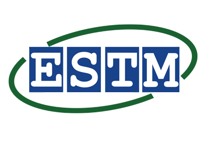

Profil
Je suis ingénieur en Télécommunication et Réseaux passionné par la technologie et
l'innovation.
Motivé et enthousiaste, je suis toujours à la recherche de nouveaux défis et de nouvelles technologies à
apprendre. Je
suis également un excellent communicant et un joueur d'équipe, capable de collaborer efficacement avec
des
personnes de
tous horizons.
Expériences
-
Assistant Gestion du Système d'Information
ESTM
2024Stage dans le département de la Gestion du Système d'Information
Durée: 3 mois -
Assistant Gestion du Système d'Information
SONATEL
2021Développement d'application web avec les technologies Express JS, React et MySQL.
Durée: 2 années
Etudes
-
Master en Télécommunication et Réseaux
ESTM
Ecole Supérieure de Technologie et de Management
2024 -
Licence en Télécommunication et Réseaux
ESTM
Ecole Supérieure de Technologie et de Management
2022
Langues
-
Français:
-
Anglais:
Compétences
- Développement :
- HTML
- CSS
- JS
- Système d'exploitation :
- Windows
- Linux
- Mac OS
- Informatique :
- Pack Office
- Réseaux:
- Cablâge RJ45
- Mise en place de services réseaux :
- DHCP
- DNS
- TOIP
Projets
- Développement d'un site web e-commerce pour une boutique locale: J'ai conçu et développé un site web e-commerce pour une boutique de vêtements locale. Le site web est convivial et permet aux clients de parcourir les produits, de les ajouter à leur panier et de passer leur commande en ligne.
- Mise en place d'un réseau informatique pour une petite entreprise: J'ai installé et configuré un réseau informatique pour une petite entreprise. Le réseau permet aux employés de partager des fichiers, d'accéder à Internet et d'utiliser des imprimantes.